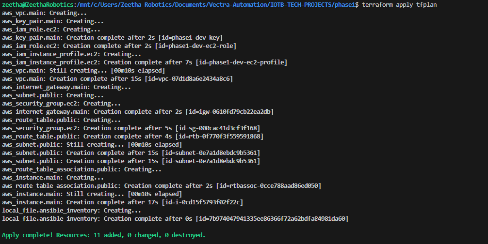
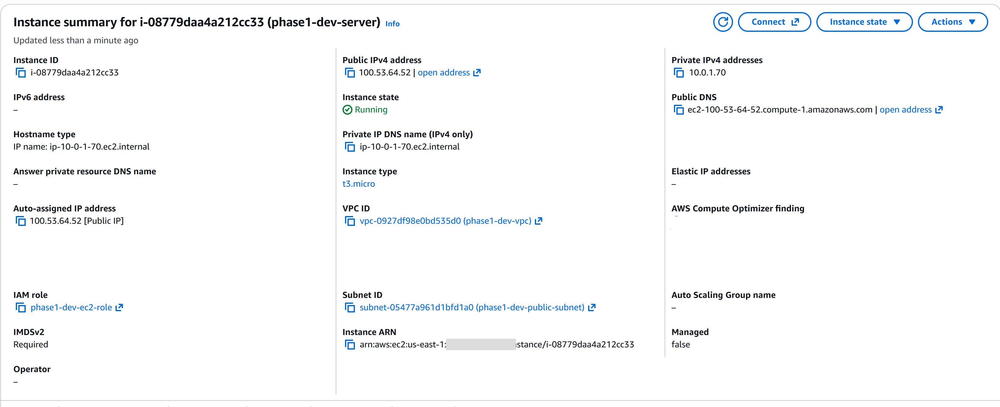
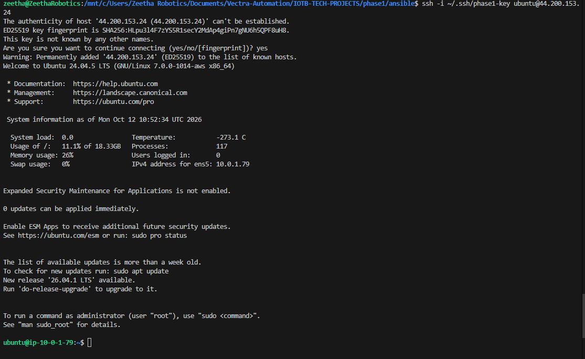
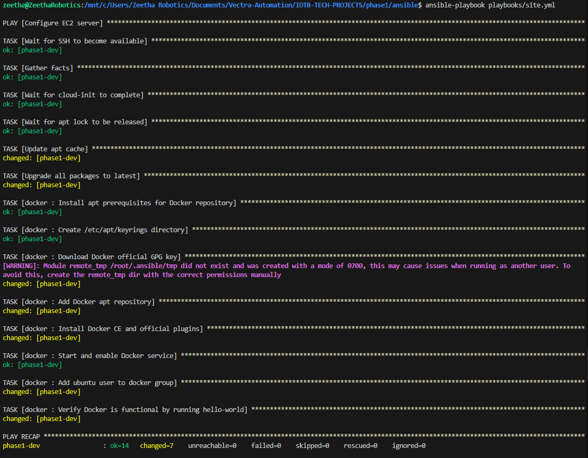
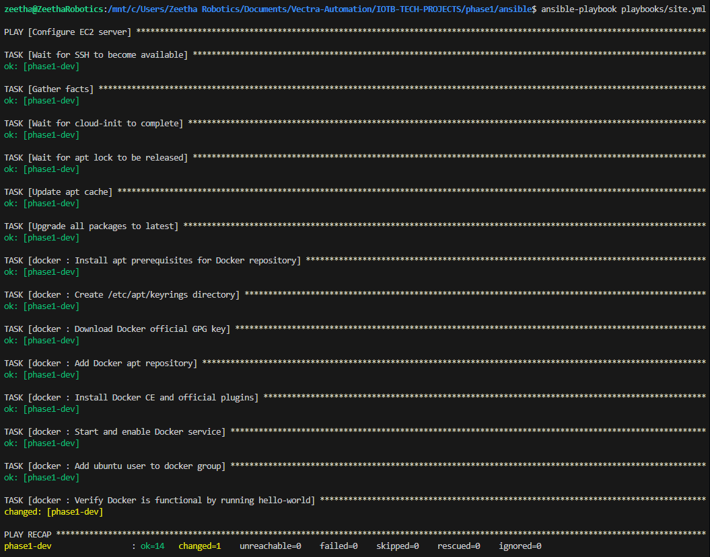
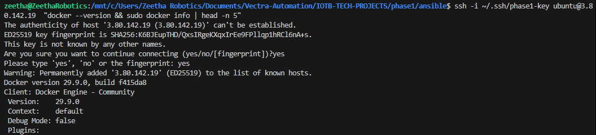

Cloud Infrastructure & Automated GitOps CI/CD Delivery
Full architectural evidence portfolio covering deterministic AWS provisioning, IMDSv2 compute hardening, automated Just-In-Time Security Group ingress, and zero-downtime rolling container releases.
Monthly AWS reduction via Zero-NAT gateway topology ($347/mo down to $28.48/mo).
Zero persistent public SSH exposure; ephemeral runner authorized for ~40s per deploy.
Multi-stage Alpine runtime stripping dev tooling and non-root UID execution.
Instant commit-SHA rollbacks via rollback.sh engine without port collisions.






Dynamic Perimeter Whitelisting & ECR Token Piping
.github/workflows/cd-deploy.yml
Instead of exposing Port 22 permanently to the public internet, the pipeline queries the runner's ephemeral IP at execution time, authorizes a temporary /32 rule in the AWS Security Group, pipes short-lived ECR Docker authorization tokens over SSH, and guarantees revocation via GitHub Actions if: always().
│
▼
[ AWS EC2 Security Group ] ──► aws ec2 authorize-security-group-ingress --port 22 --cidr $RUNNER_IP/32
│
▼
[ Runner AWS STS ] ────────► aws ecr get-login-password (Generate 12-hr token)
│
▼ (Piped directly over SSH)
[ EC2 Host Docker Daemon ] ──► docker login && docker compose up -d --force-recreate
│
▼ (Always executed cleanup)
[ AWS EC2 Security Group ] ──► aws ec2 revoke-security-group-ingress --port 22 --cidr $RUNNER_IP/32 (LOCKED)
Key Operational Commits
6bda6ba fix(deploy): resolve ECR registry dynamically via STS and pipe Docker auth token to EC2
26676b1 ci(deploy): sanitize SSH private key line endings and pass via env context
d1e3313 ci(deploy): upgrade build-push-action to v6 and implement ephemeral runner IP whitelisting
cdb540d feat(infra): configure remote S3 state backend with native lockingFinOps Cost Optimization (91.8% Cloud Expense Reduction)
docs/architecture/cost-optimization-analysis.mdAn exhaustive cloud infrastructure cost audit was conducted comparing traditional AWS reference architectures against ZeetaFin's hardened single-node topology. By bypassing managed AWS NAT Gateways ($0.045/hr + data processing charges) and implementing gp3 encrypted volumes with burstable compute profiles, baseline operational expenditures were slashed from $347.45/month to $28.48/month while preserving zero-trust network isolation.